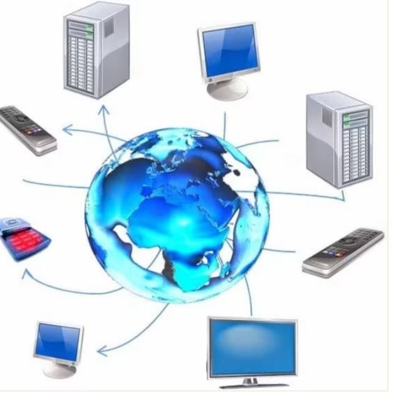

الشبكات والانترنت |
|
|  |
تعريف الشبكةهى عباره عن مجموعه من اجهزه الحاسوب والاجهزه الاخرى المتصله مع بعضها لتستطيع تبادل المعلومات خلالها واستخدام المصادر على الشبكه |
نشأه وتاريخ الشبكات |
|
|
بدأت الشبكات وتطورت مع تطور الحاسوب الرقمى فى الخمسينات من القرن الماضى قد تم تطوير مفهوم الشبكات فى الكثير من مختبرات علوم الحاسب فى الولايات المتحده والمملكه المتحده وفرنسا بدات احدى وكالات وزاره الدفاع الامريكيه فى ابحاثها لتدشين شبكه اربانت فى الستينات تم ارسال اول رساله عبر شبكه الاربانت من جامعه كاليفورنيا فى لوس انجلوس على يد البروفسور كيونارد كليزوك الى معهد ستانفورد للابحاث قد تم تطوير العديد من الشبكات فى نهايه الستينات ومن هذه الشبكات شبكه مخبر الفيزياء القومى (NPL) ويتم نت (Tymnet) وتنلى نت(Telenet). باستخدام مجموعه من بروتوكولات الاتصال وقد تطورت شبكه الاربانت وتطورها ادى الى تطوير بروتوكولات اتصال سمحت بالربط بين الشبكات المختلفه لتشكيل شبكه واحده مترابطه. تم دعم الوصول الى شبكه الاربانت فى عام 1981عندما قامت مؤسسه العلوم القوميه (NSF) بتمويل شبكه علوم الحاسب |
|
|
|
تم اخراج شبكه الاربانت من الخدمه عام 1990 بسبب بدء مزودات خدمات الانترنت التجاريه فى الظهور فى اواخر الثمنينات من القرن العشرين قامت عده شركات تجاريه فى عدد من المدن الامريكيه بالاتصال مع بعض اجزاء شبكه الانترنت أدى هذه الاتصال الى اخراج شبكه مؤسسه العلوم القوميه من الخدمه عام 1995بعدها تم رفع القيود عن الاستخدام التجارى لشبكه الانترنت فى ثمنينات القرن الماضى قامت الابحاث فى المنطقه الاوروبيه للابحاث الثوريه الى تطوير شبكه الويب نتج عنها ربط مستندات النص التشعبى بنظام معلومات يمكن النفاذ اليه فى اى موقع على الشبكه وكانت لها اثر ثورى على التجاره والثقافه والتكنولوجيا وبعدها تطور البريد الالكترونى والمكالمات الهاتفيه عبر شبكه الانترنت ومكالمات الفديو وشبكه الويب |
أنواع الشبكاتتصنف الشبكات الى ثلاث أنواع حسب الشكل الهندسى والحيز الجغرافى وعلاقه الانظمه |
|

|
حسب الشكل الهندسىالشبكه الخطيههى عباره عن خط مستقيم يستخدم فى الشبكات الصغيره البسيطه يكون تصميم الشبكه توصل على صف واحد على طول السلك يسمى(backbone) واذا انقطع سلك جهاز منهم فى السلك لا يتم تشغيل بقيه الاجهزه ويتم ارسال البيانات فى الاجهزه جهاز تلو الاخر لا يمكن الارسال مع بعضهم فى نفس الوقت واذا حدث فسيحدث تصادم |
الشبكه الحلقيهفى هذه الشبكه يتم ربط الأجهزه فى شكل حلقه او دائره فى السلك بدون Terminat ويتم نقل الاشارات على مدار الحلقه فى اتجاه واحد لكل جهاز على الشبكه واذا توقف احد الاجهزه او توقف عن العمل سيؤدى الى توقف الشبكه بالكامل |
|
الشبكه النجميه
يتم توصيل الحاسب الرئيسى بالحاسبات اتصالا مباشر عن طريق كابل او اتصال لاسلكى وتعد من ابسط انواع التوصيل حيث لا يتم اتصال بين حاسب واخر او شبكه اخرى الا اذا عن طريق الحاسب الرئيسى
|
|
الشبكه الترابطيههذا النوع من الشبكات نادر الاستعمال وانشاؤها بشكل علمى ذلك بسبب التكلفه العاليه بسبب كثره التوصيلات المطلوبة |
|
حسب الحيز الجغرافى(LAN) الشبكه المحليههذه الشبكه تتكون من عده اجهزه ربما لا تتجاوز العشره متصله مع بعض ضمن منطقه معروفه مثل غرفه او بناء ويمكن ان يتصل معها جهاز طباعه وهذه الاجهزه تعمل مع بعضها ويتميز هذه الشبكه عن غيرها بسرعه كبيره فى تبادل الملفات والاستفاده الفوريه من موارد الشبكه |
|
(WAN) الشبكه الواسعهتمتد على مساحات اضافيه كبيره لتصل المدن ببعضها وتستخدم وصلات مخصصه لتوصيل الاجهزه لاماكن بعيده وهى تربط الشبكات المحليه بعضها البعض |
|
الشبكه الانترنتهذه شبكه عالميه تربط جميع شبكات الكمبيوتر على النطاق المحلى والعالمى لكى تكون منظومه متكامله وتساعد المستخدم فى التنقل فى المنظومه العالميه المعقده عبر خطوط الهاتف والاقمار الصناعيه واجهزه الحاسب | |
حسب علاقه الانظمهشبكه الند للندتعنى ان الحواسيب فى الشبكه يستطيع كل منها تأديه وظائف client وserver فى نفس الوقت وكل جهاز يستطيع تزويد غيره بالمعلومات فى نفس الوقت يطلب المعلومات من غيره من الاجهزه المتصله بالشبكه | |
شبكة الخادم /العميلحيث يكون هناك نوعين من الاجهزه احداهما هو المسئول (الخادم) والاجهزه الاخرى هى العميل | |